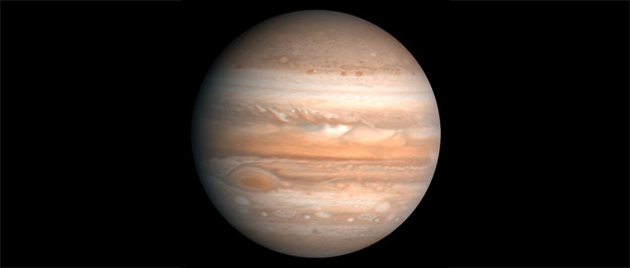
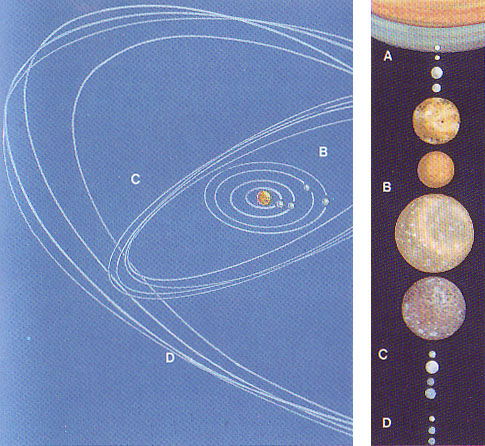

Jupiter
Jupiter est la plus grosse planète du système solaire. C'est une énorme boule de gaz, mille fois plus volumineuse que la Terre. Elle n'est pas rigoureusement sphérique, mais aplatie aux pôles ; son diamètre équatorial est de 142 800 km, son diamètre polaire de 134 200 km. Sa rotation est différentielle : la région équatoriale tourne en un peu moins de 10 heures, les régions situées à des latitudes plus élevées mettent 5 minutes de plus.
La température est d'environ -1501 °C au sommet de la couche nuageuse de Jupiter. Mais température et pression augmentent rapidement vers l'intérieur, atteignant respectivement 30 000 °C et 100 millions d'atmosphères au centre. On pense que Jupiter renferme un petit noyau de silicates de fer entouré d'une couche où l'hydrogène, fortement compressé, a la consistance d'un métal. La couche suivante est formée d'hydrogène liquide et les couches extérieures (jusqu'à 1 000 km
de profondeur) d'hydrogène et d'hélium à l'état gazeux.
L'orbite de Jupiter est excentrique ; sa distance au Soleil est de 740 900 000 km au périhélie et de 815 700 000 km à l'aphélie. Il lui faut presque 12 ans pour la parcourir.

Source : Wikipédia
Grande tache rouge de Jupiter
Jupiter est la planète la plus brillante après Vénus. Elle est visible plusieurs mois de l'année. Dans un petit télescope, elle apparaît découpée horizontalement en zones claires et en bandes sombres, blanches, jaunes et marron, dont l'aspect évolue constamment. Il s'agit de bandes nuageuses entraînées par la rotation rapide de la planète ; l'alternance de bandes parallèles est due à de forts courants alternativement d'est et d'ouest. Des cristaux d'ammoniac en
suspension dans de l'hydrogène forment les nuages blancs ascendants. Les bandes plus sombres, orangées ou marron, sont des zones où les gaz retombent dans l'atmosphère.
Des turbulences et des vents violents perturbent la couche nuageuse, y modelant des formes sans cesse changeantes, arabesques, chevrons, marbrures et taches. La grande tache rouge de l'hémisphère Sud est un gigantesque tourbillon cyclonique, dont la couleur rouge serait due à la présence de phosphine. Elle s'étend actuellement sur 26 200 km de long et 13 800 km de large, mais sa taille varie et semble avoir diminué depuis sa découverte au XVIIe siècle.
Plusieurs taches ovales blanches sont également visibles dans l'hémisphère Sud.
Satellites de Jupiter

Source : Étoiles et planètes, Gründ, 1988
Jupiter possède 16 satellites connus : quatre gros internes et deux groupes de petits externes, plus quelques petits satellites (A) sur orbite entre les gros et la planète. Ceux-ci, baptisés "galiléens" (B) depuis leur découverte par Galilée en 1610, ont à peu près la taille de petites planètes.
Les huit satellites externes sont de dimensions très modestes : ce sont probablement des astéroïdes capturés. Les quatre premiers (C), Leda, Himalia, Lysithéa et Elara, gravitent à une distance comprise entre 11 et 12 millions de kilomètres de la planète. Les quatre autres (D), Ananké, Carmé, Pasiphaé et Sinopé, évoluent à une distance moyenne de 22 millions de kilomètres de Jupiter.
Les quatre petits satellites internes (A), Adrastée, Metis, Amalthée et Thebe, gravitent entre Jupiter et Io. Ils sont proches de la limite de Roche - distance minimale au-delà de laquelle ils seraient désintégrés par la force gravitationnelle de Jupiter.
C'est la mission Voyager qui a révélé la présence d'anneaux autour de Jupiter. Formés de poussières et de fragments rocheux, ils ne sont pas visibles de la Terre.
Plan du site | Contact | Site réalisé par Mathieu Morainville.